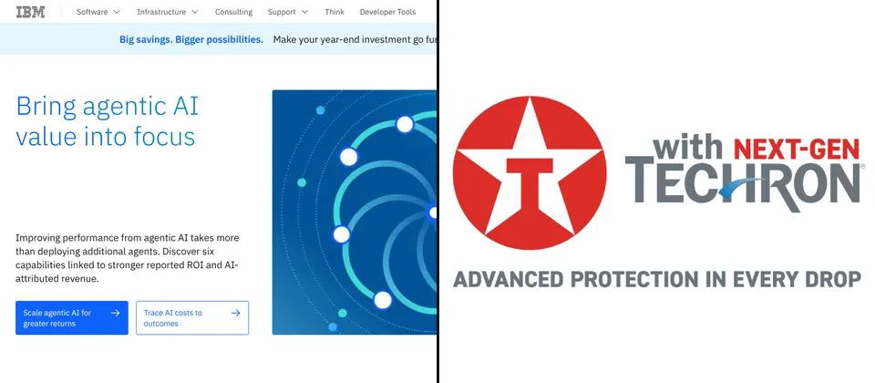

Camera off. Click to let the portrait follow your eyes and scroll with your hand.
Sunil's Music StreamClick the speaker to play
Scroll back through time
Sunil Madhu
Founder of Asyml8, Instnt and Socure. Thirty years teaching machines to tell who is real, insuring them when they get it wrong, and now putting AI on the devices people already own.
2026 · Asyml8
Brahma: run AI on the devices you already have
Founder, CEO, CTO and developer #1
My new company, Asyml8, builds Brahma, a graph-native AI mesh I have been researching and developing since 2025. It runs open-weight Mixture-of-Experts language models across ordinary Macs, PCs, Raspberry Pis and cloud machines, with no GPU or datacenter required.
Splits a model into a graph of attention heads, KV heads, neuron groups and experts spread across machines, and shows which parts fired for each token
Prompts and replies stay on your own node; only vectors travel between machines
Open source under AGPL-3.0, now heading into private beta
In the stackSemantic webGraph neural networksNative generative AILLMsSLMsMachine learning
In February 2025 I started researching how to run AI without a datacenter. The first test was Jarvis: DeepSeek-R1 running on a single Raspberry Pi 5 with an NVMe drive, CPU only, answering questions on a seven-inch screen.
From there it grew into a cluster of small machines and one big one, so Brahma could learn to split a model across whatever hardware is at hand.
Clusters of Raspberry Pi compute modules on DeskPi Super6C boards, with Pi 5 and Orange Pi nodes
A scale-up box on a TRX50 AI TOP board with a 96-core Threadripper PRO 7995WX, 2 TB of DDR5 ECC memory and 20 TB of NVMe storage
In the stackRaspberry Pi 5Compute modulesDeepSeek-R1OllamaThreadripper PRODDR5 ECC
2024 – now · Instnt
The harder question: who pays when the machine is wrong?
Founder & CEO
Fraud losses were treated as a cost of doing business. I founded Instnt to make identity fraud losses insurable for financial institutions for the first time. Its AI underwriting platform prices the risk, and its agency arm places the coverage with Munich Re and Swiss Re.
Banks, credit unions and fintechs get to move fraud losses off their balance sheets instead of holding reserves against them.
A+ rated insurers behind it, with claims settled in under 30 days
Underwriting AI developed with Munich Re
Plugs into an existing fraud stack with one line of JavaScript
2019 – 2023 · Instnt
Building Instnt: insured customer acceptance
Founder & CEO
I incorporated Instnt in 2019 on one thesis: identity fraud losses should be insurable for financial institutions, like any other operating risk. The first products put a fraud-loss guarantee behind onboarding itself.
Instnt Accept, 2021: fully managed customer onboarding, launched at FinovateFall
Instnt Access, 2022: single-click sign-up and portable KYC
Multipass, 2023: a reusable identity held as a verifiable credential in a wallet
Money20/20 booths in 2022 and 2023, and our own NYC Fintech Panel on managed acceptance
In the stackVerifiable credentialsDecentralized IDPortable KYCDevice signalsNo-code workflows
2015 – 2023 · Patents
Nine US patents on how AI reads identity
The ideas behind Socure's AI are protected by nine issued US patents that name me as an inventor, in two families. A tenth, on Brahma, is pending.
Risk assessment using social networking data: five patents, 2016 to 2023, on scoring identity risk from social-network signals
Analyzing facial recognition data and social network data for user authentication: four patents, 2015 to 2023, on authenticating people by matching faces with their social profiles
2011 – 2019 · Socure
One question for banks: is this person real?
Founder, CEO & CTO, later Chief Strategy Officer
No ChatGPT, no TensorFlow. I founded Socure in 2011 and built its first AI: semantic inferencing and machine learning on open, unstructured data from social graphs and the wider internet to risk-rate identities in real time, plus computer vision at scale to match faces against online profiles. It served identity verification, fraud prevention and compliance. Then I built the business around it.
In the stackSemantic inferencingMachine learning on open, unstructured dataSocial BiometricsComputer vision at scale
Zero to double-digit millions in ARR, serving America's top banks
Named a top AI company in the US by Forbes and CB Insights
Social Biometrics, demoed at Finovate in 2015, and the first digital-to-physical identity verification platform at FinovateFall 2017
Hired my co-founder to scale sales on the blueprint I built
Today a leader in identity verification, valued at more than $5 billion
2010 – 2012 · Hopskoch
The first company of my own
Founder, CEO & Chairman
In 2009 I took the rules engines, statistical models and semantic web from Securent to social media. That became Hopskoch, the first end-to-end platform for running campaigns across websites, social networks, mobile apps and ad networks from one place. I bootstrapped it and led product and sales, and later sold it to WPP in a private sale.
In the stackSemantic webStatistical modelsSocial media data
Several thousand early users shaped its gamification features
Enterprise pilots in the US, Europe and China
1999 – 2010 · The identity architect
A decade inside identity and access
I architected authentication for Fortune 500 firms at Netegrity, working with Oracle and Sun on single sign-on and identity at scale. I stayed on through its move to CA, then joined Securent, where in 2006 I worked with rules engines, statistical models and the semantic web, and helped drive the $100M sale to Cisco.
In the stackSingle sign-onIdentity at scaleRules enginesStatistical modelsSemantic web
Chief Architect for Cisco's Policy Management unit, across WebEx, NAC and Call Manager
VP of Solutions Engineering at SunGard: 200 engineers and a $20M budget
Prototyped the first security agent for Microsoft SharePoint
The 1990s · IBM and the Gulf
Where the work started: decision systems and early AI
IBM; then Texaco (now Chevron), Systems Administrator to IT Manager
I started on decision processing systems and early AI at IBM, then worked with machine learning at scale through the 90s.
At Texaco I ran IT across the Middle East on Wang VS 6000 mainframes: wide-area networks, an SAP rollout, and a turn as Y2K compliance officer.
In the stackDecision processing systemsEarly AIMachine learning at scaleWang VS 6000 mainframes
1986 – 1992 · Education
Before all of it: computer science in Scotland
A BSc in Computer Science at the University of Strathclyde in 1990, then an MSc in Computer Information Systems at Glasgow Caledonian University in 1992.
30+years building software and companies
4companies founded
10US patents, 9 issued and 1 pending
$200M+raised as a founder
$5B+Socure's valuation today
$100M+in exits, plus an IPO, on teams I was part of
What I built
Products I founded or architected, and where they are today.
Single sign-on at national scale. I helped build single sign-on for Fortune 500 companies and most of the US federal government.
Identity standards. I contributed to SAML and XACML, the OASIS standards for federated login and fine-grained access policy.
The first semantic graph AI and ML platform on social and online data, at Socure in 2011.
An auto-ML fabric in 2011, years before the term AutoML was coined.
The first transmedia marketing platform built on social data, at Hopskoch.
The first real-time API for identity verification and KYC, built on semantic models of people's online behavior and network connections.
Brahma, built on my own, with a big leg up from AI.
A graph-native AI mesh. It breaks an open-weight language model into small graph vertices (attention heads, neuron groups and experts) and spreads them across ordinary Macs, PCs, Raspberry Pis and cloud machines, which find each other and answer prompts together. No GPU or datacenter. Prompts and replies stay on your own node; only vectors travel between machines.
In the marketOpen source under AGPL-3.0 and heading into private beta at mybrahma.com.
My partI built it on my own, with AI as my engineering team: the Python mesh, native Rust expert kernels and a one-command installer. On a single Apple M4 Max it runs IBM Granite at 57.8 tokens a second with the Rust kernels, against 29.8 with standard PyTorch kernels. On a MacBook CPU it answers at 28 to 34 tokens a second mybrahma.com.
Insurance that moves identity fraud losses off a lender's balance sheet. An AI underwriting platform prices the fraud risk, and Instnt Insurance Agency places the coverage with A-rated insurers. It plugs into an existing fraud stack with one line of JavaScript.
In the marketSold to banks, credit unions, lenders and fintechs to move fraud-loss exposure off their books Newswire. Munich Re provides reinsurance capacity, alongside Accredited and Howden Finextra, and the product is now offered in California Insurtech Insights.
My partFounded the company, built the underwriting platform with Munich Re and set up the agency that places the policies. The platform includes Beema, the engine that prices fraud loss insurance, and the Instnt Agent, a 25 KB script tag that reads device, behavior and journey signals and returns an insurance decision. It runs on a small team, with AI agents doing much of the work.
Socure answers one question for banks: is this person real? Before ChatGPT or TensorFlow, I built the first semantic graph AI and ML platform on social and online data, with an auto-ML fabric that trained and tuned its own models, years before AutoML had a name. On top of it sat the first real-time API for identity verification and KYC, scoring people from semantic models of their online behavior and network connections, plus computer vision to match faces against online profiles.
In the marketSocure's RiskOS platform runs the Sigma Identity, Synthetic and First-Party Fraud models, Socure Verify and Predictive DocV for more than 3,000 customers. It closed the second quarter of 2026 with $364 million in annual recurring revenue and raised at a $5.2 billion valuation in August 2026 Summit Partners.
My partFounder, CEO and CTO, later Chief Strategy Officer. I wrote the first models and product, and the engine I built in Scala is still the core of the platform; later products came in through acquisitions. I took Socure from zero to double-digit millions in ARR, and hired my co-founder to scale sales on the blueprint I built.
Hopskoch, 2013
2010 – 2012HopskochFounder
Transmedia marketing on social data
The first transmedia marketing platform built on social data: one campaign, run end to end across websites, social networks, mobile apps and ad networks, using rules engines, statistical models and the semantic web.
In the marketSeveral thousand early users shaped its gamification features, and it ran enterprise pilots in the US, Europe and China. Working with social data there showed me it could also tell whether a person is who they claim to be. That idea became Socure. Hopskoch was later acquired by WPP in a private sale AlleyWatch.
My partFounder, CEO and Chairman. I bootstrapped it and led product and sales.
Securent's Entitlement Management Solution used the XACML standard to decide, enforce and audit who can do what inside any application, from one place.
In the marketCisco bought Securent for about $100 million in 2007 Cisco, and the product shipped as Cisco Enterprise Policy Manager Cisco data sheet.
My partSenior Solutions Architect at Securent, where I worked on XACML-based policy and helped drive the sale. At Cisco I was Chief Architect for Policy Management across WebEx, NAC and Call Manager.
One login across every web application in an enterprise, with access policy managed in one place and federation over SAML.
In the marketCA bought Netegrity for $430 million in 2004 SEC filing. SiteMinder is still sold as Symantec SiteMinder by Broadcom, now on release 12.9, and still guards applications inside banks and large enterprises Broadcom.
My partSenior Architect. I helped build single sign-on for Fortune 500 companies and most of the US federal government, worked with Oracle and Sun on identity at scale, and stayed on through the move to CA.

ibm.com · texaco.com
The 1990sIBM and TexacoEngineer
Where it started
Decision processing systems and early AI at IBM, then machine learning at scale. At Texaco (now Chevron) I ran IT across the Middle East on Wang VS 6000 mainframes: wide-area networks, an SAP rollout and Y2K compliance.
My partSystems Administrator, then IT Manager for the Middle East at Texaco.
Investing & inventions
Angel investor through Cohen & Co and Parameter Ventures.
Named inventor on 9 issued US patents covering identity risk scoring and face-plus-social authentication, with a tenth pending on Brahma's private mixture of experts and graph neural network.